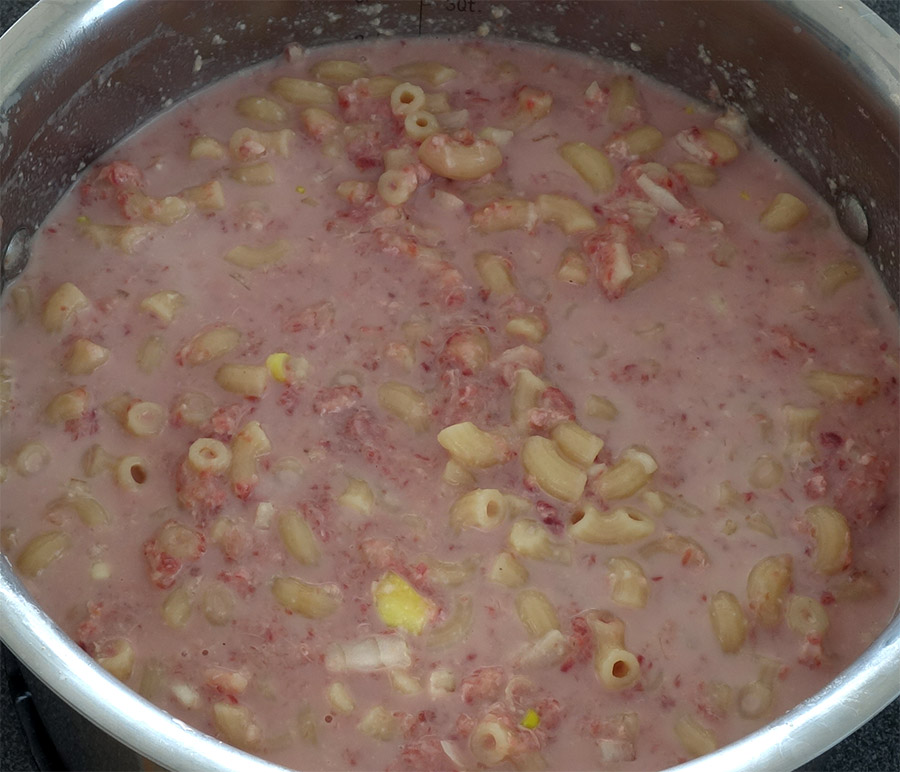

Maailman paras makaronilaatikko!!!

Makaronilaatikko on suomalaisten herkkua! Tällä reseptillä saat kuvan mukaisen herkullisen laatikon.
Ainexet:
- 6dl makaronia
- 400g jauheliha
- 1 sipuli
- 3 kananmunaa
- 20dl maito
Ohjeet:
- Keitä makaronit 12min
- Paista jauheliha ja sipuli pannulla
- Kaada jauheliha ja makaronit vuokaan ja lisää kananmunat
- Sekoita ja kypsennä uunissa 1 tunti 200 asteessa